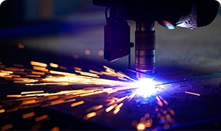

Уникальная запатентованная технология обеспечивает высококачественную защиту производственного оборудования от изнашивания
Коллективный член Академии
горных наук Украины
Все услуги
Выполнение работ по защите промышленного оборудования от вредных и разрушающих факторов на предприятии — основная специализация компании. Комплексный подход к решению поставленных задач позволяет обеспечить максимальный результат, который выражается в повышении производительности оборудования и снижении склонности к изнашиванию.
Технический аудит предприятия и анализ проблемных узлов оборудования
Разработка технологий увеличения ресурса работы оборудования
Изготовление, поставка и монтаж биметаллических листов SWIP
Восстановление и ремонт с применением износостойких материалов
Футеровка оборудования огнеупорными, теплоизоля-ционными материалами
Ремонтно-восстановительные работы «под ключ» на производственных площадях
Сварные, наплавочные работы, изготовление металло-конструкций любой сложности
Мониторинг, контроль работы и техническое сопровождение оборудования
Желаете повысить эффективность работы вашего предприятия? Начните с технического аудита.
Дополнительные услуги
Большие производственные мощности позволяют решать поставленные задачи комплексно. Результат достигается благодаря широкому спектру дополнительных услуг.
Порезка металла гильотинными ножницами
- максимальная толщина детали до 12 мм;
- максимальная ширина детали до 2000 мм;
- минимальная толщина детали до 2 мм.
Правка листов на листоправильной машине
- максимальная толщина детали до 12 мм;
- максимальная ширина детали до 2000 мм;
- минимальная толщина детали до 2 мм.
Правка листов на листоправильной машине
- максимальная толщина детали до 12 мм;
- максимальная ширина детали до 2000 мм;
- минимальная толщина детали до 2 мм.
Правка листов на листоправильной машине
- максимальная толщина детали до 12 мм;
- максимальная ширина детали до 2000 мм;
- минимальная толщина детали до 2 мм.
Вальцовка листового металла
- максимальная толщина детали до 12 мм;
- максимальная ширина детали до 2000 мм;
- минимальная толщина детали до 2 мм.
Сварные и наплавочные работы
- максимальная толщина детали до 12 мм;
- максимальная ширина детали до 2000 мм;
- минимальная толщина детали до 2 мм.
Сварные и наплавочные работы
- максимальная толщина детали до 12 мм;
- максимальная ширина детали до 2000 мм;
- минимальная толщина детали до 2 мм.

Резка металла: плазменная и газокислородная
- максимальная толщина детали до 12 мм;
- максимальная ширина детали до 2000 мм;
- минимальная толщина детали до 2 мм.
Услуги лаборатории
Компания Steel Work дополнительно предоставляет услуги Лаборатории Металловедения. Ниже вы можете ознакомиться с перечнем испытаний, которые проводит лаборатория.
С какими наименованиями объектов измерений работает лаборатория?
Отливки стальные, ГОСТ 977-88
Поковки стальные, ГОСТ 8479-70
Прокат сортовой и фасонный обыкновенного качества, ДСТУ 4484:2005 (ГОСТ 535-2005)
Прокат листовой и широкомасштабный из конструкционной качественной стали, ГОСТ 1577-93
Прокат толстолистовой из углеродистой стали обыкновенного качества, ГОСТ 14637-89
Прокат тонколистовой из углеродистой стали высокого и обыкновенного качества общего назначения, ДСТУ 2834-94 (ГОСТ 16523-97)
Прокат из стали повышенной прочности, ГОСТ 19281-89
Наплавленный металл, ТУ У 28.7- 318395 61.-002-2002
Прокат листовой и широкополосный универсальный специального назначения из конструкционной легированной высококачественной стали, ГОСТ 11269-76
Прокат сортовой, калиброванный, со специальной отделкой поверхности из углеродистой качественной конструкционной стали, ГОСТ 1050–88
Сталь легированная конструкционная, ГОСТ 4543-71
Отливки из легированных, износостойких сталей, сплавов и чугунов для деталей горнометаллургического оборудования, по соответствующим ГОСТам и ТУ
Детали из инструментальных, подшипниковых, пружинных и других легированных и углеродистых сталей и сплавов, согласно НД
Отливки, детали из чугунов серых, ковких, высокопрочных и др., согласно НД
Какие показатели измерений определяются во время исследования?
Механические испытания
Предел прочности
Предел текучести
Предел удлинения
Предел сужения
Загиб
Ударная вязкость при комнатной t°С
Твердость по Бринеллю
Твердость по Роквеллу
Металлографические испытания
Поверхностные дефекты
Макроструктура
Микроструктура
Исследование качества металла
Экспертизные исследования причин износа
Экспертизные исследования причин поломок
Экспертизные исследования причин выхода из строя деталей оборудования
Определение качества металла
Условия проведения испытаний
Существует комплекс требований к металлам, сплавам и сварным соединениям, которых необходимо придерживаться для получения максимально точных результатов.
Требования к проведению механических испытаний
Механические испытания возможно проводить на точно и качественно изготовленных механическим способом образцах, которые соответствуют требованиям НД.
Общие обязательные требования
Механические испытания возможно проводить на точно и качественно изготовленных механическим способом образцах, которые соответствуют требованиям НД.
Требования к проведению металлографических испытаний
Механические испытания возможно проводить на точно и качественно изготовленных механическим способом образцах, которые соответствуют требованиям НД.
Зарудняетесь принять решение?
Жмите на кнопку ниже, с вами свяжется специалист, закрепленный за вашим регионом, и поможет сделать правильный выбор.